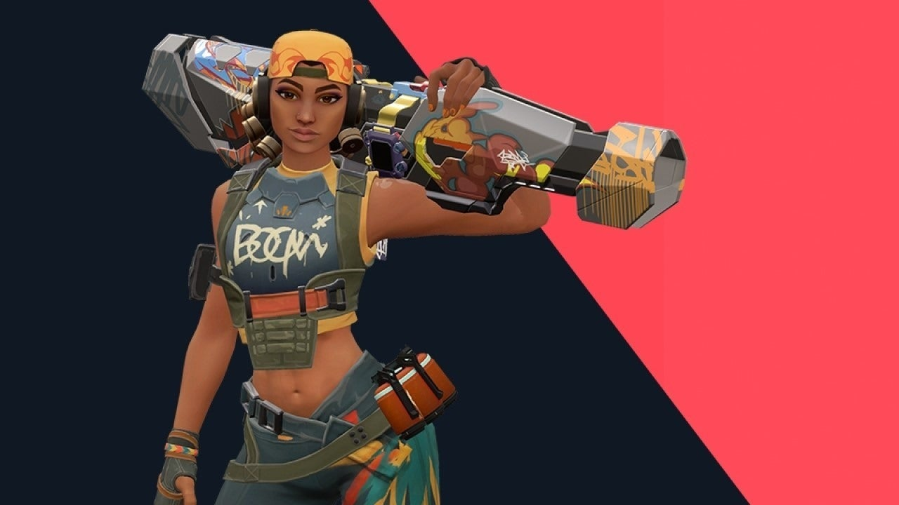

Ability 1(blastpack)-This ability is a satchel that can stick to surfaces .U can press the satchel key to detonate it.U can instantly launch another satchel.You can either damage the enemies with this satchel or u can launch urself in the air for a short amount of time.This can be used to get of out of dangerous situations by using double satchel boost.There will be a video demonstrating the double satchel boost.
Ability 2(grenade)-This ability is a grenade which on impact releases 4 pellets that give 25 damage each.It also damages teamates.There is a limit on how high u can throw ur grenade before it explodes.This can be used clear out a corner without u going there.This is useful as the enemy is forced to peak you or die from the grenade.
Ability 3(boombot)-This ability is a bot that explodes when it sees an enemy.This explosion will only damage ur enemies.If it detects an enemy it will change its direction and move towards them.Its damage is 100.This also can be used to clear a corner or an area.There is a path that comes on ur screen and it shows the direction of the boombot if u release it there.This cost 200 creds.
Ultimate(rocket launcher)-This ability is a rocket launcher that kills the enemy even if they have full shields and health.U can pair this ability well with the blast pack by using double satchel to gain height.But if u shoot the rocket launcher little far from the opponent the damage will decrease.